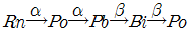
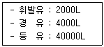

위험물산업기사 (2018-03-04 기출문제)
1과목: 일반화학
1. 1기압에서 2L 의 부피를 차지하는 어떤 이상기체를 온도의 변화 없이 압력을 4기압으로 하면 부피는 얼마가 되겠는가?
- 8L
- 2L
- 1
- 0.5L
(정답률: 88%)

2. 반투막을 이용하여 콜로이드 입자를 전해질이나 작은 분자로부터 분리 정제하는 것을 무엇이라 하는가?
- 틴들현상
- 브라운 운동
- 투석
- 전기영동
(정답률: 81%)
3. 불순물로 식염을 포함하고 있는 NaOH 3.2g 을 물에 녹여 100mL 로 한 다음 그 중 50mL를 중화하는데 1N 의 염산이 20mL 필요했다. 이 NaOH 의 농도(순도)는 약 몇 wt%인가?
- 10
- 20
- 33
- 50
(정답률: 49%)
4. 지시약으로 사용되는 페놀프탈레인 용액은 산성에서 어떤 색을 띠는가?
- 적색
- 청색
- 무색
- 황색
(정답률: 79%)
5. 다음 중 배수비례의 법칙이 성립하는 화합물을 나열한 것은?
- CH4, CCL4
- SO2, SO3
- H2O, H2S
- SN3, BH3
(정답률: 90%)
6. 결합력이 큰 것부터 작은 순서로 나열한 것은?
- 공유결합 ＞ 수소결합 ＞ 반데르발스결합
- 수소결합 ＞ 공유결합 ＞ 반데르발스결합
- 반데르발스결합 ＞ 수소결합 ＞ 공유결합
- 수소결합 ＞ 반데르발스결합 ＞ 공유결합
(정답률: 85%)
7. 다음 중 CH3COOH 와 C2H5OH 의 혼합물에 소량의 진한 황산을 가하여 가열하였을 때 주로 생성되는 물질은?
- 아세트산에틸
- 메탄산에틸
- 글리세롤
- 디에틸에테르
(정답률: 59%)
8. 다음 중 비극성 분자는 어느 것인가?
- HF
- H2O
- NH3
- CH4
(정답률: 66%)
9. 구리를 석출하기 위해 CuSO4 용액에 0.5F 의 전기량을 흘렸을 때 약 몇 g 의 구리가 석출되겠는가? (단, 원자량은 Cu 64, S 32, O 16 이다.)
- 16
- 32
- 64
- 128
(정답률: 65%)
10. 다음 물질 중 비점이 약 197℃ 인 무색 액체이고, 약간 단맛이 있으며 부동액의 원료로 사용하는 것은?
- CH3CHCl2
- CH3COCH3
- (CH3)2CO
- C2H4(OH)2
(정답률: 57%)
11. 다음 중 양쪽성 산화물에 해당하는 것은?
- NO2
- Al2O3
- MgO
- Na2O
(정답률: 72%)
12. 다음 중 아르곤(Ar)과 같은 전자수를 갖는 양이온과 음이온으로 이루어진 화합물은?
- NaCl
- MgO
- KF
- CaS
(정답률: 64%)
13. 다음 중 방향족 화합물이 아닌 것은?
- 톨루엔
- 아세톤
- 크레졸
- 아닐린
(정답률: 63%)
14. 산소의 산화수가 가장 큰 것은?
- O2
- KClO4
- H2SO4
- H2O2
(정답률: 74%)
15. 에탄올 20.0g 과 물 40.0g을 함유한 용액에서 에탄올의 몰분율은 약 얼마인가?
- 0.090
- 0.164
- 0.444+++
- 0.896
(정답률: 72%)
16. 다음 중 밑줄 친 원자의 산화수 값이 나머지 셋과 다른 하나는?
- Cr2O72-
- H3PO4
- HNO3
- HClO3
(정답률: 79%)
17. 어떤 금속(M) 8g 을 연소시키니 11.2g 의 산화물이 얻어졌다. 이 금속의 원자량이 140이라면 이 산화물의 화학식은?
- M2O3
- MO
- MO2
- M2O7
(정답률: 77%)
18. 다음 중 전리도가 가장 커지는 경우는?
- 농도와 온도가 일정할 때
- 농도가 진하고 온도가 높을수록
- 농도가 묽고 온도가 높을수록
- 농도가 진하고 온도가 낮을수록
(정답률: 77%)
19. Rn 은 α선 및 β선을 2번씩 방출하고 다음과 같이 변했다. 마지막 Po 의 원자번호는 얼마인가?(단, Rn 의 원자번호는 86, 원자량은 222이다.)

- 78
- 81
- 84
- 87
(정답률: 78%)
20. 어떤 기체의 확산속도가 SO2(g)의 2배이다. 이 기체의 분자량은 얼마인가? (단, 원자량은 S=32, O=16 이다.)
- 8
- 16
- 32
- 64
(정답률: 73%)
2과목: 화재예방과 소화방법
21. 위험물안전관리법령상 제3류 위험물 중 금수성물질에 적응성이 있는 소화기는?
- 할로겐화합물소화기
- 인산염류분말소화기
- 이산화탄소소화기
- 탄산수소염류분말소화기
(정답률: 70%)
22. 할로겐화합물 청정소화약제 중 HFC-23 의 화학식은?
- CF3I
- CHF3
- CF3CH2CF3
- C4F10
(정답률: 65%)
23. 질식효과를 위해 포의 성질로서 갖추어야 할 조건으로 가장 거리가 먼 것은?
- 기화성이 좋을 것
- 부착성이 있을 것
- 유동성이 좋을 것
- 바람 등에 견디고 응집성과 안정성이 있을 것
(정답률: 73%)
24. 인화성 액체의 화재의 분류로 옳은 것은?
- A급 화재
- B급 화재
- C급 화재
- D급 화재
(정답률: 86%)
25. 수소의 공기 중 연소 범위에 가장 가까운 값을 나타내는 것은?
- 2.5 ~ 82.0vol%
- 5.3 ~ 13.9vol%
- 4.0 ~ 74.5vol%
- 12.5 ~ 55.0vol%
(정답률: 63%)
26. 마그네슘 분말이 이산화탄소 소화약제와 반응하여 생성될 수 있는 유독기체의 분자량은?
- 28
- 32
- 40
- 44
(정답률: 67%)
27. 위험물안전관리법령상 옥내소화전 설비의 설치기준에 따르면 수원의 수량은 옥내소화전이 가장 많이 설치된 층의 옥내소화전 설치개수(설치개수가 5개 이상인 경우는 5개)에 몇 m3를 곱한 양 이상이 되도록 설치하여야 하는가?
- 2.3
- 2.6
- 7.8
- 13.5
(정답률: 89%)
28. 물이 일반적인 소화약제로 사용될 수 있는 특징에 대한 설명 중 틀린 것은?
- 증발잠열이 크기 때문에 냉각시키는데 효과적이다.
- 물을 사용한 봉상수 소화기는 A급, B급 및 C급 화재의 진압에 적응성이 뛰어나다.
- 비교적 쉽게 구해서 이용이 가능하다.
- 펌프, 호스 등을 이용하여 이송이 비교적 용이하다.
(정답률: 86%)
29. CO2 에 대한 설명으로 옳지 않은 것은?
- 무색, 무취 기체로서 공기보다 무겁다.
- 물에 용해 시 약 알칼리성을 나타낸다.
- 농도에 따라서 질식을 유발할 위험성이 있다.
- 상온에서도 압력을 가해 액화시킬 수 있다.
(정답률: 75%)
30. 물리적 소화에 의한 소화효과(소화방법)에 속하지 않는 것은?
- 제거효과
- 질식효과
- 냉각효과
- 억제효과
(정답률: 76%)
31. 위험물안전관리법령상 간이소화용구(기타소화설비)인 팽창질석은 삽을 상비한 경우 몇 L 가 능력단위 1.0 인가?
- 70 L
- 100 L
- 130 L
- 160 L
(정답률: 82%)
32. 위험물안전관리법령상 소화설비의 구분에서 물분무등소화설비에 속하는 것은?
- 포소화설비
- 옥내소화전설비
- 스프링클러설비
- 옥외소화전설비
(정답률: 64%)
33. 가연성고체 위험물의 화재에 대한 설명으로 틀린 것은?
- 적린과 유황은 물에 의한 냉각소화를 한다.
- 금속분, 철분, 마그네슘이 연소하고 있을 때에는 주수해서는 안 된다.
- 금속분, 철분, 마그네슘, 황화린은 마른 모래 팽창질석 등으로 소화를 한다.
- 금속분, 철분, 마그네슘의 연소 시에는 수소와 유독가스가 발생하므로 충분한 안전거리를 확보해야 한다.
(정답률: 61%)
34. 과산화칼륨이 다음과 같이 반응하였을 때 공통적으로 포함된 물질(기체)의 종류가 나머지 셋과 다른 하나는?(오류 신고가 접수된 문제입니다. 반드시 정답과 해설을 확인하시기 바랍니다.)
- 가열하여 열분해 하였을 때
- 물(H20)과 반응하였을 때
- 염산(HCl)과 반응하였을 때
- 이산화탄소(CO2)와 반응하였을 때
(정답률: 62%)
35. 다음 중 보통의 포소화약제보다 알코올형 포소화약제가 더 큰 소화효과를 볼 수 있는 대상물질은?
- 경유
- 메틸알코올
- 등유
- 가솔린
(정답률: 75%)
36. 연소의 3요소 중 하나에 해당하는 역할이 나머지 셋과 다른 위험물은?
- 과산화수소
- 과산화나트륨
- 질산칼륨
- 황린
(정답률: 70%)
37. 위험물안전관리법령상 전역방출방식 또는 국소방출방식의 불활성가스소화설비 저장용기의 설치기준으로 틀린 것은?
- 온도가 40℃ 이하이고 온도 변화가 적은 장소에 설치할 것
- 저장용기의 외면에 소화약제의 종류와 양, 제조년도 및 제조자를 표시할 것
- 직사일광 및 빗물이 침투할 우려가 적은 장소에 설치할 것
- 방호구역 내의 장소에 설치할 것
(정답률: 75%)
38. 칼륨, 나트륨, 탄화칼슘의 공통점으로 옳은 것은?
- 연소 생성물이 동일하다.
- 화재 시 대량의 물로 소화한다.
- 물과 반응하면 가연성 가스를 발생한다.
- 위험물안전관리법령에서 정한 지정수량이 같다.
(정답률: 80%)
39. 공기포 발포배율을 측정하기 위해 중량 340g, 용량 1800mL 의 포 수집 용기에 가득히 포를 채취하여 측정한 용기의 무게가 540g 이었다면 발포배율은? (단, 포 수용액의 비중은 1로 가정한다.)
- 3배
- 5배
- 7배
- 9배
(정답률: 63%)
40. 위험물안전관리법령상 위험물저장소 건축물의 외벽이 내화구조인 것은 연면적 얼마를 1소요단위로 하는가?
- 50m2
- 75m2
- 100m2
- 150m2
(정답률: 73%)
3과목: 위험물의 성질과 취급
41. 취급하는 장치가 구리나 마그네슘으로 되어 있을 때 반응을 일으켜서 폭발성의 아세틸라이트를 생성하는 물질은?
- 이황화탄소
- 이소프로필알코올
- 산화프로필렌
- 아세톤
(정답률: 75%)
42. 휘발유를 저장하던 이동저장탱크에 탱크의 상부로부터 등유나 경유를 주입할 때 액표면이 주입관의 선단을 넘는 높이가 될 때까지 그 주입관내의 유속을 몇 m/s 이하로 하여야 하는가?
- 1
- 2
- 3
- 5
(정답률: 72%)
43. 과산화벤조일에 대한 설명으로 틀린 것은?
- 벤조일퍼옥사이드라고도 한다.
- 상온에서 고체이다.
- 산소를 포함하지 않는 환원성 물질이다.
- 희석제를 첨가하여 폭발성을 낮출 수 있다.
(정답률: 78%)
44. 이황화탄소를 물속에 저장하는 이유로 가장 타당한 것은?
- 공기와 접촉하면 즉시 폭발하므로
- 가연성 증기의 발생을 방지하므로
- 온도의 상승을 방지하므로
- 불순물을 물에 용해시키므로
(정답률: 84%)
45. 다음 중 황린의 연소 생성물은?
- 삼황화린
- 인화수소
- 오산화인
- 오황화린
(정답률: 73%)
46. 위험물안전관리법령상 위험물의 지정수량이 틀리게 짝지어진 것은?
- 황화린-50kg
- 적린-100kg
- 철분-500kg
- 금속분-500kg
(정답률: 70%)
47. 다음 중 요오드값이 가장 작은 것은?
- 아미인유
- 들기름
- 정어리기름
- 야자유
(정답률: 64%)
48. 다음 제4류 위험물 중 연소범위가 가장 넓은 것은?
- 아세트알데히드
- 산화프로필렌
- 휘발유
- 아세톤
(정답률: 59%)
49. 다음 위험물 중 보호액으로 물을 사용하는 것은?
- 황린
- 적린
- 루비듐
- 오황화린
(정답률: 70%)
50. 다음 위험물의 지정수량 배수의 총합은?

- 18
- 32
- 46
- 54
(정답률: 52%)
51. 위험물안전관리법령상 옥내저장소의 안전거리를 두지 않을 수 있는 경우는?
- 지정수량 20배 이상의 동식물유류
- 지정수량 20배 미만의 특수인화물
- 지정수량 20배 미만의 제4석유류
- 지정수량 20배 이상의 제5류 위험물
(정답률: 72%)
52. 질산염류의 일반적인 성질에 대한 설명으로 옳은 것은?
- 무색 액체이다.
- 물에 잘 녹는다.
- 물에 녹을 때 흡열반응을 나타내는 물질은 없다.
- 과염소산염류보다 충격, 가열에 불안정하여 위험성이 크다.
(정답률: 44%)
53. 위험물안전관리법령에 따른 질산에 대한 설명으로 틀린 것은?
- 지정수량은 300kg 이다.
- 위험등급은 Ⅰ 이다.
- 농도가 36wt% 이상인 것에 한하여 위험물로 간주된다.
- 운반시 제1류 위험물과 혼재할 수 있다.
(정답률: 75%)
54. 과산화수소 용액의 분해를 방지하기 위한 방법으로 가장 거리가 먼 것은?
- 햇빛을 차단한다.
- 암모니아를 가한다.
- 인산을 가한다.
- 요산을 가한다.
(정답률: 74%)
55. 금속칼륨의 보호액으로 적당하지 않는 것은?
- 유동파라핀
- 등유
- 경유
- 에탄올
(정답률: 73%)
56. 휘발유의 일반적인 성질에 대한 설명으로 틀린 것은?
- 인화점은 0℃ 보다 낮다.
- 액체비중은 1보다 작다.
- 증기비중은 1보다 작다.
- 연소범위는 약 1.4 ~ 7.6% 이다.
(정답률: 62%)
57. 인화칼슘이 물과 반응하였을 때 발생하는 기체는?
- 수소
- 산소
- 포스핀
- 포스겐
(정답률: 86%)
58. 다음 위험물안전관리법령에서 정한 지정수량이 가장 작은 것은?
- 염소산염류
- 브롬산염류
- 니트로화합물
- 금속의 인화물
(정답률: 61%)
59. 다음 중 발화점이 가장 높은 것은?
- 등유
- 벤젠
- 디에틸에테르
- 휘발유
(정답률: 44%)
60. 제조소에서 위험물을 취급함에 있어서 정전기를 유효하게 제거할 수 있는 방법으로 가장 거리가 먼 것은?
- 접지에 의한 방법
- 공기중의 상대습도를 70% 이상으로 하는 방법
- 공기를 이온화하는 방법
- 부도체 재료를 사용하는 방법
(정답률: 74%)